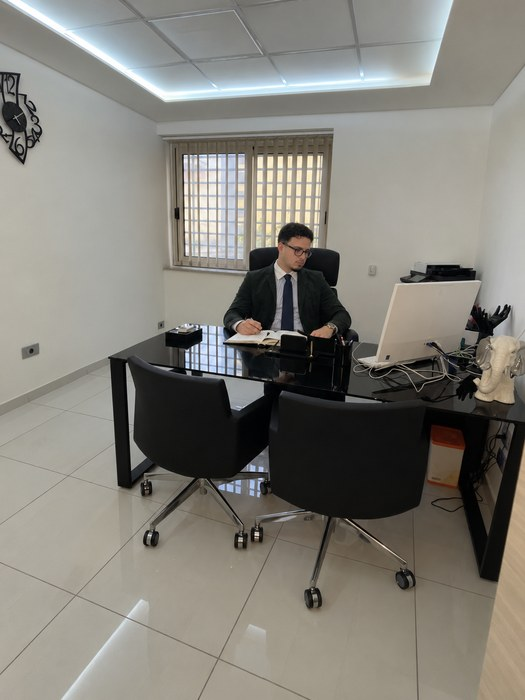

Fusione
Altoforno e convertitore a ossigeno da una parte, forno elettrico ad arco alimentato a rottame dall'altra: due vie per arrivare all'acciaio liquido.
Le mie passioni
FOTOVOLTAICO
Quello che mi piace: le energie rinnovabili, l'acciaio, i cantieri in mare e a terra, lo studio del diritto, i robot e i razzi.

Di giorno lavoro nel settore immobiliare; al pomeriggio e alla sera studio giurisprudenza, con il sogno di arrivare a essere giurista d'impresa oppure avvocato d'affari. In passato ho realizzato impianti fotovoltaici ed eolici. Mi appassionano la metallurgia pesante, la cantieristica navale e il mondo offshore, la robotica industriale e i razzi; per hobby sto costruendo un braccio robotico.
In passato ho realizzato impianti fotovoltaici ed eolici. È una parte di quello che ho fatto e di ciò che continuo a seguire con passione: il sole e il vento che diventano energia.
Un impianto fotovoltaico converte la luce in corrente continua attraverso le celle dei moduli; gli inverter la trasformano in corrente alternata da immettere in rete. Strutture fisse o inseguitori monoassiali, cavidotti, cabine di trasformazione e sistemi di monitoraggio completano l'opera.
Un aerogeneratore eolico trasforma l'energia cinetica del vento in rotazione del rotore e, tramite il generatore nella navicella, in energia elettrica. Fondazioni, torre, pale e connessione alla rete richiedono logistica pesante e progettazione accurata, a terra come in mare.
La mia passione per l'acciaio: il materiale che tiene in piedi ponti, navi, piattaforme e torri eoliche.
Altoforno e convertitore a ossigeno da una parte, forno elettrico ad arco alimentato a rottame dall'altra: due vie per arrivare all'acciaio liquido.
Colata continua in bramme, blumi e billette; poi laminazione a caldo e a freddo, forgiatura e fusione in getti per i pezzi più complessi.
Tempra, rinvenimento e normalizzazione cambiano la microstruttura del metallo e ne regolano durezza, tenacità e resistenza a fatica.
Prove di trazione e resilienza, controlli non distruttivi a ultrasuoni e radiografici, certificazioni dei materiali secondo le norme tecniche.
Un'altra passione: il mondo dei cantieri navali, della costruzione e degli appalti offshore e petroliferi, e dell'estrazione via mare e via terra.
Le navi e le strutture offshore moderne nascono a blocchi: lamiere tagliate e saldate in officina, assemblate in sezioni, poi unite in bacino o sullo scalo. Gru a portale, saldatura automatizzata e controlli dimensionali scandiscono ogni fase fino al varo e alle prove in mare. È un mondo che seguo con grande interesse.
Mi interessa come si mettono in piedi i grandi progetti energetici: spesso con contratti EPC o EPCI (ingegneria, approvvigionamento, costruzione e installazione). Contano la ripartizione dei rischi, le garanzie, le penali per ritardo, le varianti e la risoluzione delle controversie, spesso con modelli contrattuali internazionali e arbitrato.
In mare si lavora con piattaforme fisse a jacket, unità galleggianti di produzione e stoccaggio (FPSO), impianti di perforazione mobili e sistemi sottomarini collegati da condotte. Ogni fase, dalla perforazione allo smantellamento, richiede tecnologia e un quadro di concessioni e sicurezza molto rigoroso.
Sulla terraferma l'estrazione passa da impianti di perforazione, pozzi, centri di trattamento dell'olio e del gas e reti di oleodotti e gasdotti. Permessi di ricerca, concessioni di coltivazione e tutela ambientale sono il punto di incontro tra ingegneria e diritto.
Studio giurisprudenza con un obiettivo che mi sta a cuore: arrivare a essere giurista d'impresa oppure avvocato d'affari. Mi piace il punto in cui il diritto incontra l'energia e l'industria.
Il percorso a ciclo unico: diritto privato, costituzionale, commerciale, amministrativo, internazionale. Le fondamenta.
In corsoDiritto commerciale e societario, contratti internazionali, diritto dell'energia e degli appalti pubblici: le materie che voglio approfondire.
Prossimo passoTirocinio presso uno studio d'affari o un ufficio legale d'impresa; per la professione forense, praticantato ed esame di abilitazione.
ObiettivoIl traguardo che mi sono dato: occuparmi di contratti, operazioni e progetti industriali e energetici, dal lato del diritto.
TraguardoCostituzione e governance delle società, organi sociali, patti parasociali, responsabilità degli amministratori: temi che studio con curiosità.
Fornitura, EPC, joint venture, distribuzione: redazione e negoziazione, clausole su rischio, garanzie e penali.
Appalti pubblici e privati, procedure di gara, esecuzione, varianti, riserve e contenzioso.
Autorizzazioni per rinnovabili, concessioni, mercato elettrico, contratti di acquisto di energia (PPA).
Fusioni e acquisizioni: due diligence, contratti di compravendita di partecipazioni, closing e integrazione.
«L'imprenditore è chi esercita professionalmente un'attività economica organizzata al fine della produzione o dello scambio di beni o di servizi.»
Codice civile, art. 2082
Mi piace anche la robotica industriale e il mondo dei razzi costruiti con i bracci robotici: saldano, rivettano e ispezionano le strutture dei lanciatori, con una precisione al decimo di millimetro su pezzi lunghi decine di metri.
Saldatura per attrito e a fascio, foratura e rivettatura automatizzate dei serbatoi e delle sezioni dei razzi.
Deposizione automatica di fibre di carbonio per strutture leggere: ugelli, carenature, interstadi.
Robot con sensori a ultrasuoni e visione artificiale controllano ogni giunzione prima del volo.